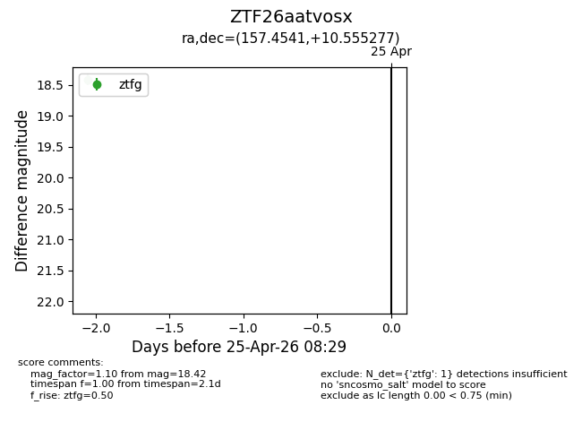
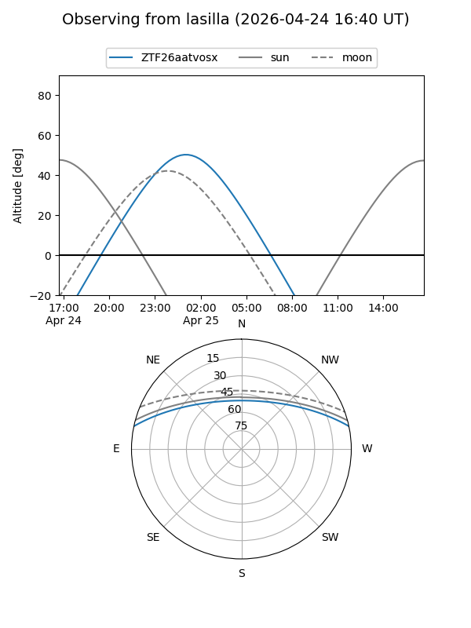
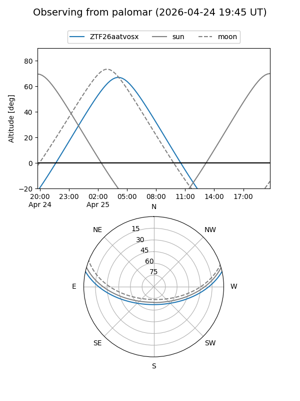

ZTF26aatvosx
Target ZTF26aatvosx at 2026-04-25 08:30
Aliases and brokers:
FINK: link
Lasair: link
ALeRCE: link
alt names
ZTF26aatvosx (ztf,fink_ztf)
Coordinates:
equatorial (ra, dec) = 157.4541,+10.55528
equatorial (HMS+DMS) = 10:29:48.99,+10:33:19.00
galactic (l, b) = (232.4900,+52.81231)
Flags:
Photometry:
last ztfg=18.42
1 ztfg detections
Lightcurve

Visibility


Additional plots